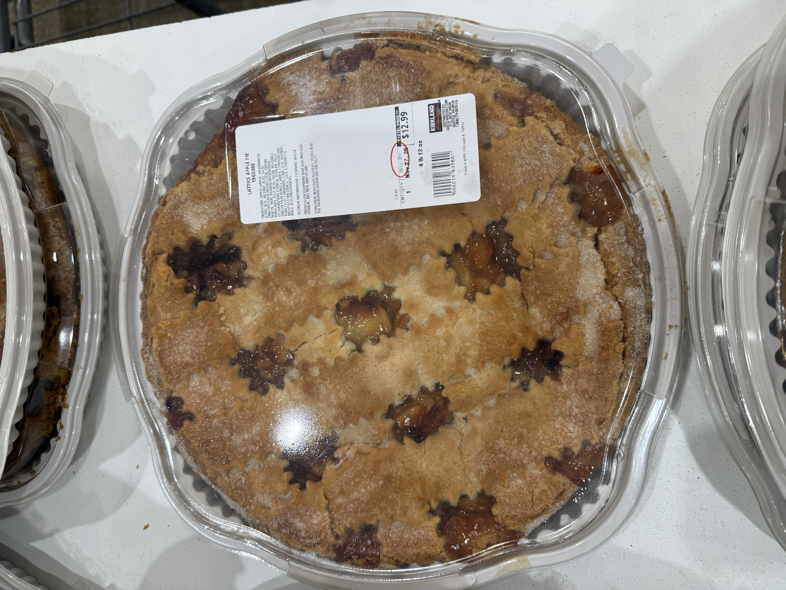

My Apple Pie Reviews
Here are all the apple pies I have tried. Each review includes photos,
my detailed thoughts, and my rating using the 5-point system. I will
keep adding new reviews as I discover more pies.
Citi Market - 5/5 Points

Rating Breakdown
- Visual Appeal: 1/1 - The pie looks beautiful with a perfect golden-brown crust
- Balanced Sweetness: 1/1 - Not too sweet, great balance of tart and sweet
- Perfect Crust: 1/1 - Flaky, buttery, just the right thickness
- Good Apple Texture: 1/1 - Apples are soft but still have bite
- Overall Flavor Balance: 1/1 - Everything works together perfectly
My Review
This apple pie is amazing. The crust is perfectly flaky and golden.
When you bite into it, it cracks just right. The apples are fresh
and you can taste each slice. The sweetness is perfect - not
too much sugar, just enough to bring out the apple flavor. Would I
buy it again? Yes, absolutely!
Costco - 2/5 Points
Location: Costco Wholesale

Rating Breakdown
- Visual Appeal: 1/1 - Looks nice and well-made
- Balanced Sweetness: 0/1 - Too sweet for my taste
- Perfect Crust: 1/1 - Good flaky crust on top, bottom is slightly thick
- Good Apple Texture: 0/1 - Apples are too soft, almost mushy
- Overall Flavor Balance: 0/1 - Despite issues, flavors work okay together
My Review
This apple pie is good but not great. The crust visually looks nice.
However, the top and bottom crust is a little too thick. The apples
taste okay, but they are very soft, almost like applesauce. I wish
they had more texture. The pie is very sweet - maybe too much
sugar - and requires you to use ice cream to balance out the
sweetness. Overall, this is an okay apple pie if you need something
fast for Thanksgiving. Would I buy it again? Maybe, if nothing else
is available.
Submit Your Own Apple Pie Review
Have you tried an apple pie? Share your review! I want to hear about
the apple pies you have tasted. Use my rating system to score the pie
and tell me what you think. Your review might appear on this website!